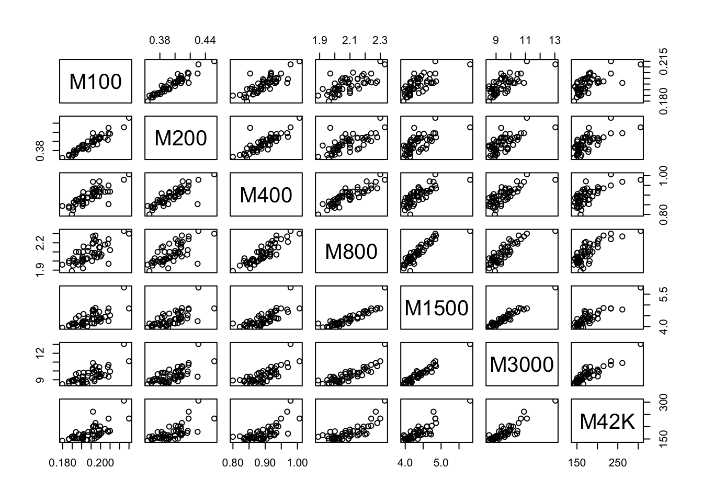

Exercise 6
Ex-1: Track and Field data
Load the trackfieldrecords.rdata file with the objects runMen and runWomencontaining national records (a few years ago…) for several track and field events like 100m, 200m and so on up to marathon.
- Explore the data for both men and women using the
pairs()- plotting function (you must exclude the Nation variable since this is non-numeric). Which events appear to be most correlated with each other? Check by using thecor()- function.
runMen

M100 M200 M400 M800 M1500 M5000
M100 1.0000000 0.9182262 0.8309117 0.7442904 0.6856014 0.6012401
M200 0.9182262 1.0000000 0.8402764 0.8001957 0.7667000 0.6819550
M400 0.8309117 0.8402764 1.0000000 0.8657134 0.8280259 0.7697657
M800 0.7442904 0.8001957 0.8657134 1.0000000 0.9141338 0.8581948
M1500 0.6856014 0.7667000 0.8280259 0.9141338 1.0000000 0.9258073
M5000 0.6012401 0.6819550 0.7697657 0.8581948 0.9258073 1.0000000
M10K 0.6151720 0.6831485 0.7791802 0.8639693 0.9328583 0.9736221
M42K 0.5042096 0.5846823 0.7008098 0.8028080 0.8645454 0.9314061
M10K M42K
M100 0.6151720 0.5042096
M200 0.6831485 0.5846823
M400 0.7791802 0.7008098
M800 0.8639693 0.8028080
M1500 0.9328583 0.8645454
M5000 0.9736221 0.9314061
M10K 1.0000000 0.9426344
M42K 0.9426344 1.0000000Mens running 5000m have the highest correlation (0.9736221) with the mens running 10000m.
runWomen

M100 M200 M400 M800 M1500 M3000
M100 1.0000000 0.9467379 0.8081658 0.6930853 0.7044551 0.7244875
M200 0.9467379 1.0000000 0.8359269 0.6899677 0.6710056 0.6896211
M400 0.8081658 0.8359269 1.0000000 0.8867761 0.7713646 0.7667097
M800 0.6930853 0.6899677 0.8867761 1.0000000 0.8940659 0.8558395
M1500 0.7044551 0.6710056 0.7713646 0.8940659 1.0000000 0.9680086
M3000 0.7244875 0.6896211 0.7667097 0.8558395 0.9680086 1.0000000
M42K 0.6834812 0.6816038 0.7100963 0.7817496 0.8793371 0.8992468
M42K
M100 0.6834812
M200 0.6816038
M400 0.7100963
M800 0.7817496
M1500 0.8793371
M3000 0.8992468
M42K 1.0000000Womens running 3000m and 1500m have highest correlation (0.9680086)
- Run the following command and inspect the results:
If you were going to “predict” a nation’s record for women’s M3000, which record among men would you use (rows in the table are women variables, columns are men)?
M100 M200 M400 M800 M1500 M5000
M100 0.6498088 0.7596954 0.7771514 0.8044833 0.7839077 0.7178016
M200 0.7156407 0.7994483 0.8109453 0.8167137 0.7661781 0.7034653
M400 0.6446457 0.7145535 0.7917089 0.7775715 0.7696469 0.7381318
M800 0.5951081 0.6970012 0.7401714 0.7854039 0.8342518 0.8165157
M1500 0.5168778 0.6360782 0.6763620 0.8478502 0.8760489 0.8580631
M3000 0.5709669 0.6805302 0.6843510 0.8563419 0.8823372 0.8651087
M42K 0.6115053 0.7012308 0.6469833 0.8110551 0.8302699 0.8026641
M10K M42K
M100 0.7129767 0.6508319
M200 0.7034699 0.6207631
M400 0.7308135 0.6909427
M800 0.8198519 0.7845295
M1500 0.8678719 0.8224444
M3000 0.8642040 0.8138355
M42K 0.8174819 0.7617686Men’s M1500 shows the highest corrlation to women’s M3000 and appears to be the best indicator, but in order to really check this we should run a regression analysis with cross-validation to see which predicts best.
- Run a PCA (with scale=FALSE) on the men’s data and print out a summary and the weights (loadings) for the two first PC’s. How many components is needed to explain at least 99% of the variation in the data? Try to give an interpretation of PC1, and explain why so few components explains so much of the total variability.
Importance of components:
PC1 PC2 PC3 PC4 PC5 PC6
Standard deviation 9.5714 0.64469 0.16890 0.05837 0.02504 0.01174
Proportion of Variance 0.9951 0.00451 0.00031 0.00004 0.00001 0.00000
Cumulative Proportion 0.9951 0.99964 0.99995 0.99999 1.00000 1.00000
PC7 PC8
Standard deviation 0.005531 0.001908
Proportion of Variance 0.000000 0.000000
Cumulative Proportion 1.000000 1.000000Standard deviations:
[1] 9.571385082 0.644693566 0.168903836 0.058368611 0.025044224 0.011741932
[7] 0.005531221 0.001907787
Rotation:
PC1 PC2 PC3 PC4 PC5
M100 0.0003114456 0.003791385 -0.0004464229 0.034263682 0.06928683057
M200 0.0006561471 0.006598923 -0.0045059760 0.067997996 0.09942466440
M400 0.0017586559 0.013081159 -0.0050349487 0.130442765 0.26474390131
M800 0.0053934463 0.031753781 -0.0204694112 0.388759540 0.86027951301
M1500 0.0142216652 0.085359566 -0.0505397117 0.902389791 -0.41847810675
M5000 0.0789902428 0.371210553 -0.9211248397 -0.086483902 0.00318668361
M10K 0.1804367732 0.902594597 0.3853474767 -0.065224624 0.00313259780
M42K 0.9802898281 -0.197489555 0.0041519653 0.003453442 -0.00005894003
PC6 PC7 PC8
M100 0.1857971886 -0.3874294273 0.89966021802
M200 0.2743985871 -0.8500734432 -0.43302111402
M400 0.8850905469 0.3553387410 -0.05518056236
M800 -0.3264355465 0.0276603436 -0.00187887027
M1500 -0.0151860117 0.0155552910 0.00730642310
M5000 0.0006422286 0.0008575811 0.00123621688
M10K -0.0028151530 -0.0001828900 -0.00092954328
M42K 0.0006521836 -0.0003586993 0.00007882645Only one component is needed to explain more than 99% of the variation. From the loadings we see that the loading weight for M42K (Marathon) is totally dominating with a weight of 0.98. All other weights are small. PC1 is therefore more or less indentical to the Marathon variable.
PC1 is located in the direction of larget variability, and due to the large scale of marathon times, this variable totally dominates the PCA. In such cases it may be better to use standardized variables (which is equivalent to running the Eigenvalue decomposition on the correlation matrix instead of the covariance matrix of the variables).
- Re-run the PCA with option
scale=TRUEinprcomp(). How many variables are needed to explain 99% of the variation in this case? How much is explained by the two first components? How would you interprete the loadings of PC1, PC2 and PC3?
Importance of components:
PC1 PC2 PC3 PC4 PC5 PC6
Standard deviation 2.5633 0.9534 0.40757 0.36150 0.28593 0.26585
Proportion of Variance 0.8213 0.1136 0.02076 0.01633 0.01022 0.00883
Cumulative Proportion 0.8213 0.9349 0.95567 0.97201 0.98222 0.99106
PC7 PC8
Standard deviation 0.21933 0.15305
Proportion of Variance 0.00601 0.00293
Cumulative Proportion 0.99707 1.00000Standard deviations:
[1] 2.5632659 0.9533720 0.4075668 0.3614964 0.2859250 0.2658514 0.2193276
[8] 0.1530517
Rotation:
PC1 PC2 PC3 PC4 PC5 PC6
M100 0.3147320 0.57160764 0.3221891 -0.17825965 0.2693210 -0.57805951
M200 0.3357394 0.46376440 0.3720765 0.24846936 -0.1583109 0.64975030
M400 0.3555158 0.24390209 -0.6153083 -0.59456840 -0.2359173 0.16186490
M800 0.3694759 0.01416996 -0.4962129 0.52143606 0.5412904 -0.03180729
M1500 0.3737977 -0.14043846 -0.1049466 0.41034445 -0.4941592 -0.17471037
M5000 0.3647948 -0.31286011 0.1938534 -0.04632644 -0.2370475 -0.14483943
M10K 0.3673547 -0.30713222 0.1801950 -0.09853770 -0.1201737 -0.22018330
M42K 0.3428839 -0.43193016 0.2277248 -0.31755463 0.4887995 0.34128719
PC7 PC8
M100 0.14253381 -0.107813088
M200 -0.12180886 0.099741993
M400 -0.01191483 0.002292263
M800 -0.22325915 0.036225141
M1500 0.60484786 -0.143519952
M5000 -0.59744833 -0.543326346
M10K -0.17280871 0.797342549
M42K 0.40275527 -0.159855316Now we need 6 components to achieve 99% explained variance. Two components explain about 93.5% of the total variance. The loadings for PC1 are almost identical for all variables, hence PC1 is close to identical to the average run record across all distances for each country. PC2 has weights ranging from highly negative for marathon to highly positive for M100. This PC therefore contrasts short versus long runs. PC3 is a component that contrasts medium long distances (400, 800 and 1500 m) and either short or long distances. This component appears to extract information about how these distances differ from both sprint and endurance distances.
Make a biplot with the first two components. You may use the argument “xlabs” in biplot to indicate that “Nations” should be used to label the scores from each country. Give comments to how the nations cluster relative to the loadings.

On the first axis (PC1) we observe that Cook’s Islands and West Samoa have the largest weights, and they therefore have on average poor (long time) national records for all distance. At the other end we find USA and others with on average good national records. Along PC2 (vertically) we find those with relatively poor times on long distances, but relatively good times on short, at the bottom (Dom. Repub, Bermuda, Singapore, Malaysia, Thailand and West Samoa) whereas at the top we find countries with poor records on short distances compared to their long distance records (Costa Rica, North-Korea, Cook’s Island and others).
- Let’s try to predict the 3000M national records for women using the men’s data. First use a least squares approach using the men’s variables directly as predictor for women’s M3000. To accomplish this use
runWomen$M3000as response inlm(). Are there any significant variables? What is the \(R^2\) and the adjusted \(R^2\) values?
[1] 0.8401099[1] 0.810363Two variables are significant at 5% level in this fitted model, M800 and M400. The \(R^2\)-values indicate more than 80% explained variance. There is a slight difference between the adjusted and the non-adjusted \(R^2\) indicating that there may be too many variables included in the model.
Either perform a manual elimination of insignificant variables, or run backward() from the mixlm-package to find a reduced model with only significant effects (5% testlevel). Which variables do you end up having in your model?
Backward elimination, alpha-to-remove: 0.05
Full model: runWomen$M3000 ~ M100 + M200 + M400 + M800 + M1500 + M5000 +
M10K + M42K
<environment: 0x7fb201baec68>
Step RSS AIC R2pred Cp F value Pr(>F)
M42K 1 5.4943 -100.87 0.64432 7.0138 0.0138 0.90701
M10K 2 5.5339 -102.50 0.68727 5.3237 0.3170 0.57625
M100 3 5.6396 -103.51 0.72978 4.1518 0.8601 0.35867
M200 4 5.7522 -104.49 0.74649 3.0329 0.9180 0.34301
M5000 5 6.2018 -102.57 0.75522 4.5533 3.6742 0.06135 .
---
Signif. codes: 0 '***' 0.001 '**' 0.01 '*' 0.05 '.' 0.1 ' ' 1
Call:
lm(formula = runWomen$M3000 ~ M400 + M800 + M1500, data = runMen)
Residuals:
Min 1Q Median 3Q Max
-0.61392 -0.27975 -0.05405 0.25908 0.72214
Coefficients:
Estimate Std. Error t value Pr(>|t|)
(Intercept) -6.9296 1.6869 -4.108 0.000155 ***
M400 -11.2412 4.2861 -2.623 0.011656 *
M800 6.6612 2.2110 3.013 0.004124 **
M1500 3.5560 0.8062 4.411 0.000058 ***
---
Signif. codes: 0 '***' 0.001 '**' 0.01 '*' 0.05 '.' 0.1 ' ' 1
s: 0.3595 on 48 degrees of freedom
Multiple R-squared: 0.8195,
Adjusted R-squared: 0.8082
F-statistic: 72.62 on 3 and 48 DF, p-value: < 0.00000000000000022 In addition to M400 and M800 I find M1500 to be highly significant after removing other variables. This “covered” effect from the full model was because of the inflated variances due to multicollinear variables in the full model.
- Fit another model using all principal component scores from the men’s data as predictors for women’s M3000. The scores are stored in the principal component object as element names
x. Which components are significant at a 5% test level? Compare the \(R^2\) values with those from the full model using all original variables as predictors.
Call:
lm(formula = runWomen$M3000 ~ PC1 + PC2 + PC3 + PC4 + PC5 + PC6 +
PC7 + PC8, data = PCdata)
Residuals:
Min 1Q Median 3Q Max
-0.73334 -0.20602 -0.05371 0.24956 0.71835
Coefficients:
Estimate Std. Error t value Pr(>|t|)
(Intercept) 9.496731 0.049562 191.613 < 0.0000000000000002 ***
PC1 0.276029 0.019524 14.138 < 0.0000000000000002 ***
PC2 -0.172006 0.052493 -3.277 0.002082 **
PC3 0.036144 0.122791 0.294 0.769901
PC4 0.535933 0.138440 3.871 0.000363 ***
PC5 0.009821 0.175030 0.056 0.955514
PC6 0.042608 0.188246 0.226 0.822007
PC7 -0.095474 0.228177 -0.418 0.677723
PC8 0.042425 0.326985 0.130 0.897373
---
Signif. codes: 0 '***' 0.001 '**' 0.01 '*' 0.05 '.' 0.1 ' ' 1
s: 0.3574 on 43 degrees of freedom
Multiple R-squared: 0.8401,
Adjusted R-squared: 0.8104
F-statistic: 28.24 on 8 and 43 DF, p-value: 0.00000000000001001 Components 1,2 and 4 are highly significant, the others not. The \(R^2\) values are identical to the full model on the orginal variables since we use all available components. The information content in PC1-PC8 is therefore the same as in the eight original variables.
- Perfom a model reduction also for the PCR-model by excluding Principal components until you have only PC’s significant at 5% test level. Compare the estimated regression coefficients between the full and the reduced PCR-models. Why do you think the effects don’t change for the variables retained in the model?
Backward elimination, alpha-to-remove: 0.05
Full model: runWomen$M3000 ~ PC1 + PC2 + PC3 + PC4 + PC5 + PC6 + PC7 + PC8
<environment: 0x7fb201f54808>
Step RSS AIC R2pred Cp F value Pr(>F)
PC5 1 5.4929 -100.88 0.63184 7.00315 0.0031 0.9555
PC8 2 5.4951 -102.86 0.68267 5.01998 0.0172 0.8962
PC6 3 5.5016 -104.80 0.73274 3.07121 0.0536 0.8180
PC3 4 5.5127 -106.70 0.74918 1.15786 0.0925 0.7623
PC7 5 5.5350 -108.49 0.76271 -0.66706 0.1907 0.6644
Call:
lm(formula = runWomen$M3000 ~ PC1 + PC2 + PC4, data = PCdata)
Residuals:
Min 1Q Median 3Q Max
-0.72321 -0.22065 -0.04615 0.24148 0.69070
Coefficients:
Estimate Std. Error t value Pr(>|t|)
(Intercept) 9.49673 0.04709 201.668 < 0.0000000000000002 ***
PC1 0.27603 0.01855 14.880 < 0.0000000000000002 ***
PC2 -0.17201 0.04988 -3.449 0.001183 **
PC4 0.53593 0.13154 4.074 0.000172 ***
---
Signif. codes: 0 '***' 0.001 '**' 0.01 '*' 0.05 '.' 0.1 ' ' 1
s: 0.3396 on 48 degrees of freedom
Multiple R-squared: 0.8389,
Adjusted R-squared: 0.8288
F-statistic: 83.3 on 3 and 48 DF, p-value: < 0.00000000000000022 The reduced model has only PC1, PC2 and PC4 as predictors, and the \(R^2\) is almost as high as for the full model. The estimated effects are identical due to the fact that the PC’s are orthogonal to each other and explain independent variability.
- For special interested: Use the estimated effects (alphas from the lecture) from the reduced PCR-model to compute PCR-estimated regression coefficients (betas in the lecture) for the original variables back back-rotation. Compare the estimated regression coefficients from the PCR-approach with Least squares estimates using original (BUT SCALED) variables.
Least Squares PCR
M100 -0.13550215 -0.106980158
M200 0.20150612 0.146066484
M400 -0.27889424 -0.262468871
M800 0.38788143 0.379003748
M1500 0.26732611 0.347252628
M5000 0.16217753 0.129680098
M10K 0.14769681 0.101419723
M42K -0.01890858 -0.001247342For most of the variables the PCR-estimates are closer to zero (shrinkage effect) which induces a bias, but as lectured, the PCR-model may have smaller variance for the estimates due to avoidance of the multicollinearity problem. It seems like PCR has down-weighted the short and long distances compared to the Least Squares approach, which seems reasonable.